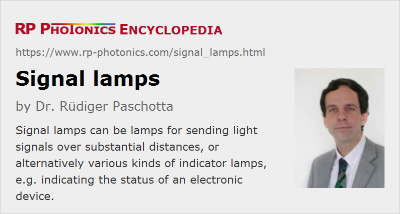

Signal Lamps
Definition: lamps for displaying or sending light signals
Alternative terms: indicator lamps, Morse lamps
More general term: light sources
German: Signallampen
Category: non-laser light sources
How to cite the article; suggest additional literature
Author: Dr. Rüdiger Paschotta
The term signal lamps is used for very different kinds of lamps (light emitters). A traditional meaning refers to lamps which were used for transmitting information in the form of light flashes over distances of hundreds of meters or even several kilometers – mostly for military purposes. Here, one typically used some kind of gas discharge lamps or a halogen lamp with a relatively small emitting volume and a metallic reflector, e.g. a parabolic mirror for collimating the generated light, so that the signal is visible over a large distance. The strongly directed signal beam also reduced the risk of interception of messages. It was possible to use Morse codes, for example, for transmitting text messages. This kind of information transmission was an early form of free-space optical communications, which is nowadays mostly realized with lasers and can reach data rates which are orders of magnitude higher. Also, one may prefer to use infrared light which is less easily noticed by parties which one prefers to exclude from the communications. That also reduces the amount of light scattering in air, which can enable interception.
Today, signal lamps are mostly small indicator lamps for viewing from small or moderate distances. There is a wide range of those, based on different technologies and optimized for different applications. Some important examples:
- Glow lamps (e.g. neon glow discharge lamps) are widely used gas discharge lamps for indicating the “on” state of electric installations. Using only a simple resistor, they can directly be operated with line voltage, not requiring a transformer or other kind of lamp power supply. They are thus more economical than LED solutions, when the available voltage is relatively high.
- Light-emitting diodes (LEDs) are dominating in signaling applications where the drive voltages are low; they require only a few volts and currents of a few milliamperes or less. They can also be made in larger forms (often with multiple LEDs or alternatively with organic LEDs = OLEDs) for various types of indicator or warning lamps, e.g. for laser safety warnings, as rear lights of cars and as traffic lights. The energy efficiency is potentially high, but not all types of LED signal lamps are optimized for efficient light extraction. All types of such LED lamps and indicators occur in the automotive area. The generated light can be white or colored, e.g. red, yellow, green or blue.
- Incandescent lamps are still used for various signals, but are more and more replaced with LED solutions, which require much less optical power, have a longer lifetime (even for frequent switching) and can enable more compact solutions. Larger incandescent lamps are often made as halogen lamps. Colored light can be generated only with optical filters, with a substantial further loss of energy efficiency.
Important Parameters of Signal Lamps
Light Output and Color
Many signal lights can work with very low output e.g. on the millicandela level, while others need to produce substantially more light.
Various colors are possible, and are often appropriate for indicating certain conditions – for example, green for “everything okay” and orange or red for technical problems or hazards. Blue signal lights have become quite popular with the advent of blue-emitting LEDs, although that color is not generally understood to convey a certain type of message.
Diffuse or Directional Emission
Most signal lights emit diffusely in a broad range of directions, so that they can be seen from different directions. However, directed signal light can be appropriate where viewing from larger distances, but only in a limited range of directions is required.
Drive Voltage
Depending on the available drive voltage, different solutions can be appropriate – generally glow lamps for high voltages and LEDs or incandescent lamps for low voltages.
Energy Efficiency
Due to the usually small light output and/or limited operation time, energy efficiency (normally quantified as the luminous efficacy) is not necessarily an important performance parameter of a signal light. However, it can be important for mobile devices which need to be powered with batteries. Here, LED solutions are normally favored.
Lifetime and Reliability
A long lifetime is often very desirable not only because of the cost of replacement lamps, but also because of the cost for detecting failures and exchanging lamps. Another aspect is the reliability, which may also be important in terms of security or safety. For example, failing break indicators of cars may easily provoke accidents. In critical situations, one may even require a photodetector for monitoring the function, but in many cases one can also monitor the drive current for the same purpose.
Many incandescent lamps used as signal lamps are operated with a relatively low electric power and thus a low filament temperature. While that substantially compromises the energy efficiency, one may achieve lifetimes which are much longer than those of household lamps, for example.
Switching Speed; Flashing Signals
Very high switching speeds are usually not required for signal lamps, since the human eye is anyway not that fast. However, incandescent lamps, particularly in the form of halogen lamps, may be somewhat limited in speed in some cases. LED solutions can be extremely fast; some of them are even used for additional optical data transmission. For example, there are electricity meters and household devices (e.g. washing machines) with LED indicators which both indicate a state to the human user and can transmit digital data to a receiver device operated by a service person.
Some indicators need to be continuously flashing in order to attract more attention. That mode of operation may severely degrade the lifetime of incandescent lamps, but is no problem for LEDs.
Size and Shape
While traditional lamp technologies were more limited in terms of possible sizes and geometric shapes of signals, modern LED solutions are very flexible. They can range from micro-LEDs, which are hardly noticed when not operated, to large areas with high brightness. There are also very special types such as surface-LEDs – shapes which would be hard to realize at all with more traditional technologies.
Suppliers
The RP Photonics Buyer's Guide contains 5 suppliers for signal lamps.
Questions and Comments from Users
Here you can submit questions and comments. As far as they get accepted by the author, they will appear above this paragraph together with the author’s answer. The author will decide on acceptance based on certain criteria. Essentially, the issue must be of sufficiently broad interest.
Please do not enter personal data here; we would otherwise delete it soon. (See also our privacy declaration.) If you wish to receive personal feedback or consultancy from the author, please contact him e.g. via e-mail.
By submitting the information, you give your consent to the potential publication of your inputs on our website according to our rules. (If you later retract your consent, we will delete those inputs.) As your inputs are first reviewed by the author, they may be published with some delay.
See also: light-emitting diodes, gas discharge lamps, incandescent lamps, halogen lamps
and other articles in the category non-laser light sources
|  |
If you like this page, please share the link with your friends and colleagues, e.g. via social media:
These sharing buttons are implemented in a privacy-friendly way!